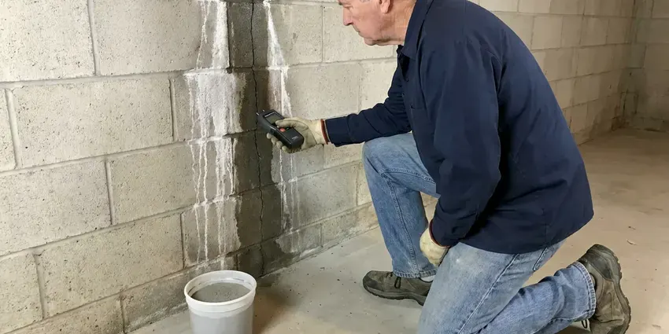

Slab Leak Detection in Waltham, MA
A slab leak soaks the soil under your foundation. We pinpoint it in Waltham, MA without breaking up the floor.
- Licensed Plumbers
- Isolation of Hot and Cold Sides
- Attic PEX Reroutes
- Thermal Floor Scans

Stop the Slab Leak Before the Soil Washes Out in Waltham, MA
Accurate locating means a smaller hole and less damage to your flooring.
Slab Leak Plumbers Nearby in Waltham, MA
BWM Plumbing knows how ground movement and aging pipe combine under a slab. Copper wears where it touches concrete. Our techs isolate the hot and cold sides, map the pipe with a locator and then listen through the slab with a ground microphone in your Waltham, MA home.
Some of what we do:
- Leaks marked within inches
- Scanning for post-tension cables
- Tracer gas for quiet PEX leaks

Additional Plumbing Maintenance Services in Waltham, MA
Our maintenance and specialty plumbing services in Waltham, MA catch small problems before they become emergencies.


Customers
Why Choose BWM Plumbing for Slab Leak Detection in Waltham, MA?
A slab leak left alone keeps wetting the soil the foundation sits on, and that can lead to settling, cracked tile and a much larger repair down the road. Catching it early is cheaper. We start with a meter test and work toward an exact spot.
- Home Value, Buyers' inspectors often flag slab leaks, so fixing it protects your sale price.
- Mold Prevention, Constant moisture from below feeds mold under carpet and behind baseboards.
- Right Equipment, Line tracers, thermal cameras and ground microphones ride on every slab leak truck.
Citywide Coverage
No matter where you live in Waltham, MA, the same equipment and steps come to your door. Ground microphones, thermal cameras, line tracers and tracer gas go on every truck, which means locating almost never takes two visits. That saves time.
Experienced Team
Licensed plumbers lead our slab leak team, which means the tech who finds it knows the repair options cold. It changes the recommendation. They understand how soil movement stresses pipe under a slab and where that pipe usually fails.
Safety-First Approach
Concrete cutting creates silica dust, so we cut with wet saws or dust-shrouded tools and seal off the work area with plastic. We contain the dust. We also wear respirators while cutting and clean up before leaving each day.
Trusted Certified Waltham Plumbing Services Professionals
At BWM Plumbing, we take pride in licensed, certified plumbing services throughout Waltham, MA. Those papers on the wall mean something. Every repair, install and maintenance visit follows strict safety and quality rules, and the plumbers doing the work carry recognized industry credentials.
Call Us Now PHCC Plumbing Contractor Recognition
PHCC Plumbing Contractor Recognition Better Business Bureau (BBB) Accreditation
Better Business Bureau (BBB) Accreditation Angi Certified Pro
Angi Certified Pro ISO 9001 Quality Management Certification
ISO 9001 Quality Management CertificationSlab Leak Detection and Repair in Waltham, MA
Slab Leaks in Older Homes in Waltham, MA
Older homes in Waltham, MA often have soft copper or galvanized steel under the slab, and both corrode with age. Copper fails at bends and where it rubs concrete, while galvanized rusts from the inside until it splits. We know those failure points. It lets us test the most likely spots first.

Tracer Gas Leak Detection in Waltham
PEX and CPVC do not carry sound well. For those, we drain the line and push in a safe hydrogen and nitrogen tracer gas, which rises through the slab and gets picked up by a sniffer at the floor surface, often through grout joints and hairline cracks. It finds leaks acoustic gear misses in Waltham homes.
Slab Leaks in Commercial Buildings in Waltham
Commercial slabs are thicker and carry larger pipe, so leaks can move more water and be harder to hear from the surface with a standard ground microphone. We adjust our methods. Our techs combine zone isolation, line tracing and tracer gas, scheduling the testing around your business hours in Waltham.
Slab Leak Price Ranges in Waltham, MA
Locating a slab leak usually runs $150 to $450. Direct access repairs often cost $1,000 to $3,000 including the concrete patch but not new flooring, and reroutes generally land between $800 and $3,500 depending on distance and access. Full repipes cost $4,000 to $15,000. They end the problem for good.
Camera Inspection for Under-Slab Drains in Waltham, MA
Drain lines under the slab can leak too. A broken cast iron or PVC drain will not move the water meter, but it can cause odors, soggy floors and slow drains, which is why we push a camera through to look for cracks, bellies and pulled joints. We show you the video before discussing any repair in your Waltham home.
Non-Invasive Slab Leak Locating in Waltham, MA
We touch the floor last. Pressure tests, line tracing, thermal scans and acoustic listening all happen from the surface in your Waltham, MA home, so nothing gets drilled or cut during the search. Only after two methods agree do we mark the spot and talk about repair options, including ones that skip the concrete entirely.
Thermal Scans on Large Floors in Waltham, MA
Large open floors can hide a leak. A thermal camera scans an entire living area in a few minutes, showing temperature differences of a degree or less across tile or concrete, so we can rule out half the house before setting up the microphone. That saves real time in bigger houses across Waltham, MA.

Commercial Slab Leak Detection in Waltham, MA
Offices, shops and restaurants on slabs in Waltham, MA can lose a lot of water fast because their supply lines are larger. After-hours testing is available. BWM Plumbing isolates zones, traces mains and branch lines under the floor, then marks the leak so the repair fits around your hours.
Slab Leak Help Near You in Waltham, MA
A fast answer on a suspected slab leak limits damage to floors and soil, since a pinhole leaking a quart an hour puts more than 150 gallons a month under the foundation. We can usually test within a day in Waltham. Have your recent water bills handy.
Slab construction and pipe materials repeat across subdivisions built in the same era around Waltham, so a house built in the same decade as its neighbors usually hides its leak in a similar place. It shortens the hunt. Coming back for the repair is simple.
BWM Plumbing at a Glance
- Licensed and insured plumbers serving Waltham, MA
- 24/7 emergency service with same-day scheduling
- Upfront, flat-rate pricing before work begins
- 4.9-star rated by 434+ Massachusetts customers
Waltham Map
Waltham Information
- Population
- 64,477
- Area codes
- 781/857/617
- Service area
- Waltham and communities within 40 miles
- Nearby
- Newton, Cambridge, Brookline, Medford
Ground movement strains pipe buried under concrete, and a leak there can undermine the foundation if it runs for months. Fast locating limits the damage in Waltham, MA.
Talk to a Plumber
Reach out to BWM Plumbing for reliable plumbing work done by licensed pros in Waltham, MA.
Our Specialized Plumbing Services in Waltham, MA
At BWM Plumbing, we handle the full list of plumbing services across Waltham, MA. From leak detection to full system installs, our team works fast and charges fair prices on homes and commercial properties alike. Explore our core services below:


How a Slab Leak Visit Runs in Waltham, MA
Simple tests come first, since a running toilet can look like a slab leak on the meter in a Waltham, MA home.
Call (857) 335-4894
Describe what you have noticed, such as warm floors. We schedule and explain the detection fee.
Isolate and Locate
Pressure tests show which side is leaking, then trace and listen.
Repair Options
You get the marked spot plus prices for each repair, then we schedule.
Frequently Asked Questions About Slab Leak Detection in Waltham
Professional slab leak detection in Waltham, MA typically runs $250 to $700, depending on how hard the leak is to find and how long it takes. Repair costs are separate. They depend on where the leak is and which repair you pick.
Direct repair works for one leak on healthy pipe in a reachable spot, usually where the floor covering is cheap to patch, like carpet or vinyl. Rerouting is often better under tile or hardwood, and it also avoids future leaks on that whole line. We price both for you.
Yes. Leaking water can swell clay or erode the soil below. Over time that leads to cracks and settling, so fast repair protects the slab.
Most visits take one to four hours. More than one leak adds time. The goal is a confirmed mark without opening anything, so we take the time to cross-check with a second method.
Sometimes. Sudden leaks are more likely to be covered. Long-running leak damage is often excluded, so ask your insurer before work starts.
Tree roots and shifting fill around old clay or cast iron sewer laterals are a frequent cause of backups in established neighborhoods. Water chemistry can also thin copper from the inside. Hot lines expand and rub against concrete or gravel, and over years that wear opens pinholes and cracks.
For most of them, yes. Slab cutting and repipes usually need one. BWM Plumbing pulls the permit and schedules the inspection in Waltham, which keeps the repair on record with the city.
It can. Water under the slab swells or washes out soil. Left for months, it can crack the slab or cause settling that costs much more than the plumbing fix.
Hear From Customers Who Hired Our Plumbing Experts

Megan L.
Our upstairs tub drained so slowly that every shower turned into a bath. BWM Plumbing pulled a wad of hair out of the stopper and then snaked the line past the trap. Three months later it still drains fast.
Drain Cleaning · Cambridge, MA
Daniel K.
A pipe burst in the garage ceiling at 11 at night. Someone answered on the second ring, and the plumber was in my driveway about fifty minutes later. He shut off the main, cut out the split section, and had water back on before 2 am.
Emergency Plumbing · Brookline, MA
James P.
Our restaurant had a slow leak at the hand sink that was rotting the cabinet base. BWM Plumbing came in at six in the morning before prep, replaced the trap and both supply lines, and was packed up before my first cook clocked in.
Commercial Plumbing · Cambridge, MARobert G.
The camera showed a full break in our clay sewer line near the street. BWM Plumbing replaced it with a trenchless pipe burst, so the only digging was two small pits in the yard. They let us watch the footage before and after.
Sewer Line Replacement · Newton, MA
Sofia M.
Two new toilets went in during one visit. The tech set them on new wax rings and swapped the old supply lines. He also noticed our bathroom faucet dripping and replaced the cartridge while he was there. No mess left behind.
Toilet Installation · Somerville, MAKevin O.
Before buying our house I paid for a sewer camera inspection. BWM Plumbing found a belly in the line that held standing water about forty feet from the cleanout. We used the video to get the sellers to fix it before closing.
Sewer Camera Inspection · Waltham, MA